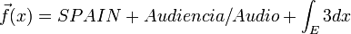

De: La Frikipedia, la enciclopedia extremadamente seria.
De: La Frikipedia, la enciclopedia extremadamente seria. De: La Frikipedia, la enciclopedia extremadamente seria.
El himno español es un ser propio de la fauna ibérica en peligro de extinción. Este canto a la grandeza de todo un imperio y al idioma aspañol posee un carácter noble y superior que mierdas como las de inglés o alemán.
Investigadores y contertulianos habituales de Cuarto Milenio han demostrado que en el pasado el himno español poseía letra.
El himno español data del 5 de Julio del 28.000 a.C. Fue creado por el Hombre de Cro-Magnon; de ahí su fama actual, aunque también se debe por su herencia genética y su estirpe (es antecesor del farsante que se hizo pasar por el creador del fuego y uno de sus descendientes fue le creador de la siesta.
Su partitura fue grabada con sangre de toro murciano en las cuevas de Altamira, pero los historiadores actuales no han sabido interpretarla y creen que son dibujitos.
Con el paso del tiempo se perdió y el terreno español quedó despojado de himno hasta que fue dominada por los musulmanes.
El himno actual surgió por el encargo de Fernando II de Aragón. A pesar de los claros intentos de que el himno fuese un raggaeton que dijese:
Pero en lugar de eso, el hombre al que se le encargó compuso "El Torito".
El disgusto del rey fue tal que antes de su muerte consiguió anular la oficialidad del himno.
Este fue el inicio de una continuidad de disputas por cual debería ser el himno español. Estas disputas aún hoy son habituales, pero ente el siglo XVI y XVII se relajó puesto que se acordó utilizar el alemán.
El siguiente himno cronológicamente aceptado fue el más que famoso:
Este himno surgió tras la muerte del Carlos Edmundo de Ory. Con la presidencia del señor oscuro de las tinieblas y el bigote se decidió dejar el himno sin letra. Pero ni con estas. El malestar crónico de los españoles se mantuvo, y dio origen a nuevas versiones ilegales como:
O la versión creada por los genios del arte musical (Raúl y Aragonés):
Por desgracia, la prensa nacional no acogió con el mismo clamor que la afición esta nueva letra (hasta ahora la más socorrida) e intentó sabotear su difusión. En los documentos secretos del KGB que WikiLeaks sacó a la luz, se indica que el chimpancé que dirigía el periódico Marca no aprobaba la unión Raúl-Luis Aragonés por miedo a que el eterno blanco se fuera al Atlético de Madrid y que por eso puso a todos sus reporteros los tres que tienen de becarios trabajando para componer un nuevo himno que atribuir a la pareja y hacer así creer a todos que ese fue el que compusieron y borrar de la memoria colectiva el otro.
Este es el montaje que publicaron desde el canal de Youtube de Raúl. Como consecuencia Luís Aragones se cabreó con Raúl dejandolo sabiamente erróneamente fuera de la convocatoria para la Eurocopa y ganándola.
Actualemente se han convocado concursos para poner letra al himno, pero cuyo auténtica finalidad es reírse de los participantes.
El último caso conocido de una nueva letra para el himno lo protagonizó Joaquín Sabina confirmando finalmente las teorías que auguraban la posibilidad de que Sabina realmente fuese Español y que lo ocultase con una máscara anarquista.
A pesar de lo que la mayoría de la gente cree, el himno español se interpretaba en Español. Además se utilizaban instrumentos cien por cien españoles para darle una armoniosidad más local. Lo jodido era imitar con una guitarra española normal y corriente y una zambomba el sonido de la trompeta, el clarinete, el oboe, el duodeno, el violín y el theremín. Por eso se recurrió a la guitarra mágica de Peret (con cuerdas por los dos lados).
En la actualidad, el gobierno español tiene asumido que los inmigrantes no han invadido, que los alemanes se beben nuestra cerveza y nos sodomizan políticamente, que los ingleses nos roban el melanoma, los países árabes nos joden con su petróleo y los latinos desprestigian nuestro idioma al doblar los Simpson, por lo que España quiso demostrar que es una nación de gran importancia internacional incluyendo la flauta de pan y el yembe para interpretar el himno.
Cuando se interpreta en ceremonias importantes como torneos deportivos de gran seguimiento es habitual que lo pongamos de una cinta directamente o que lo interpretemos mal, para añadir nuestro clásico toque de humor.
Llegando a este punto os estaréis preguntando: "¿Nos soltado un rollo del quince explicando la evolución histórica del himno español y aún no nos ha mostrado todos?"
Pues sí. Aún faltan himnos, porque el apartado histórico anterior solo se refiere himno de la monarquía española (incluso durante la dictadura España vivía una Monarquía Orgánica). Empezaremos por:
Este himno, el cual os recomiendo que os vayáis aprendiendo para cuando reinstauremos la República española después de la Segunda Guerra Civil, tiene su origen en una carta de amor entre dos soldados que querían acabar con el reinado de Fernando VII. Entre piropos, proposiciones indecentes y cursiladas ocultaban mensajes en los cuales discutían los valores que querían reavivar de su patria. La carta en cuestión fue enviada a Rafael del Riego. Tras su lectura su hijo, melómano empedernido y mojabragas oficial de Mozart, compuso una balada épica con los mensajes ocultos de la carta. Se la presentó a su padre montando un espectáculo rollo Locomía, pero con más pluma.
El himno tuvo éxito y se propagó rápido entre los revolucionarios. Como es normal en esa época de incultos musicales y analfabetos, que no conocían ni a los chunguitos, ni Motorhead, no eran capaces de seguir un ritmo sencillo y cada uno la cantaba como le salía del centro hipodámico del testículo izquierdo buenamente podía.
Con el paso del tiempo fue cada vez más utilizado (especialmente en actos presididos por Franco, debido a errores muy graciosos que terminaban en unas risas en el garrote vil, o en la final de la Copa Davis hasta que, con la Primera República fue oficial.
En la Segunda República también fue oficial, aunque el primer día se utilizó uno que había compuesto Machado (el hermano tonto menos prolífico) y, como no valía ni para limpiarse el culo con él acabó de gustar, se recuperó el de siempre. El original. Es por eso, que por convenio entre las juventudes republicanas ya tenemos decidido que este himno, conocido como el Himno de Riego, va a ser oficial. No vamos a perder el tiempo para fracasar otra vez el primer día solo porque venga Pitingo chupando poyas suplicando.
Por cierto, la letra:
Esta es la sección más prolífica (históricamente) de la música española, en cuanto a himnos se refiere. (Como se nota que el que mandaba quería tener contento al ejército para dar por culo evitar insurrecciones del populacho. Tienen himnos para todo:
Este es el que utilizan cuando están tristones.
Este va un paso más allá. Cuando la tristeza se debe a la muerte de un valiente soldado se le homenajea con este canto desde los más profundo del espíritu español de sus familiares y compañeros.
Este se creó para el Ejercito del Aire, porque entre el Ejercito del Aire y el de Tierra hay pique y entonces utilizan distintos.
Gracias a la inauguración del pantano radioactivo de Franco, en España se produjeron gran cantidad de mutaciones que llamaron la atención al profesor Charles Xavier. Con su visita a España durante 3 años formó una escuela exprés para la formación de una minipatrulla ligada a la auténtica patrulla X-Men, al servicio del dictador. Como era una rama a parte en el ejército, tenía que tener su propio himno.
Este fue un capricho de Felipe V, ¡nuestro primer Borbón! Es lo característico de los Borbones, los caprichos. Que si no me ducho, que si cazo elefantes, que si pido un himno...
En un inicio no era himno militar, sino que la subdivisión gaditana del ejército, una tarde, llegados los carnavales montaron unas chirigotas y, cuando llegó el coronel y pidió explicaciones se inventaron la excusa de que era el nuevo Toque de Diana. La excusa coló porque lo normal a esa hora es que durmiesen la siesta.
Con el primer viaje del hombre a la Luna comenzó la carrera por conquistar el espacio, destacando EE.UU. y la Unión Soviética. Pero, en secreto, España llevaba ventaja. Tenía una sección de su ejército en una base espacial e intentaban crear una Estrella de la Muerte para evitar los progresos de los demás países. El himno para esta sección era la Marcha Imperial.
Con el regreso a la democracia de mano de la monarquía de Juancar se armó un pifostio tremendo, un putiferio colosal: Las comunidades autónomas. Todas iban de guay y todas querían su propio himno, pero como yo soy el que edita este artículo y {nombreusuario} es tonto, solo pondré los himnos de las comunidades autónomas que se quieren independizar, por si algún día suena su himno siendo de otro país.
Como todo el mundo sabe, desde tiempos inmemoriales los catalanes se quieren separar y ya por el siglo XVII tenían unas cancioncillas que representaban el tono revolucionario que los llevó a la guerra contra Felipe IV. Así pues, el himno se basa en una de estas, al igual que en un romancero del siglo XII, en un canto judío, en Bohemian Rapsody, un video de Loulogio, en unas gárgaras de Monserrat Caballé... Y como resultado:
Aunque no os lo creáis, el himno gallego no es "Miña Terra Galega". Ni siquiera se menciona Galicia en él, se intuye cuando dicen "Fogar de Breogán", puesto que Breogán era el Rey De Galicia y padre de Manuel Fraga.
El origen del himno es un poema con ninguna poca musicalidad pero, que se escogió oficialmente en el exilio y con prisas.
Su letra es:
El País Vasco, quizás los más independentistas de los tres.... Es irónico que estos posean un himno sin letra, al igual que España. Quizás sea por lo jodidamente difícil que resultaría aprenderse la letra. Sí, es lo más probable ya que es una melodía que en su día Sabino Arana utilizó como himno de su partido CON LETRA, pero debieron olvidarla o algo.
¡Cómo no! España y el fútbol. El fútbol y España. ¿Qué sería de un artículo sobre Himnos Españoles sin los himnos más conocidos, más cantados los fines de semana? Pues del mismo modo, y siguiendo el esquema del sistema corrupto político español; el biparidismo...
Creado por el 75 aniversario del club es un himno que deja muy claro el espíritu del club y su fé en la cantera:
Dejemos claro desde el inicio que este himno no le hace justicia a la gran mayoría de los seguidores merengues, pues se empeñan en escribir Ala Madrid.
Este himno se orquestó del mismo modo que el fichaje de Messi, en servilletas. Luego se amplió en un viaje de tren y se grabó en un estudio con los mejores profesionales de la época, que paga tito Floren, y eso que no estaba por aquel entonces. El que si estaba era Don Santiago Bernabéu vigilando que no fallase ningún detalle e incluso corrigiendo a los cantantes. La letra es la siguiente:
El prestigioso profesor de Magisterio de la Universidad de Pamplona tras años de investigación llegó a desentrañar el misterio por el cual el Himno Español genera descontento. Muestra de ello es la siguiente fórmula matemática:
,
De lo que se deduce que la única forma de que el himno no generaría descontento en el momento que el himno deje de ser español.
El himno español en sus inicios no tenía utilidad ninguna. En la actualidad esto sigue siendo igual tiene prácticamente infinitas funciones, pero tan poco importantes que se desconoces. Las básicas son:
Autor(es):